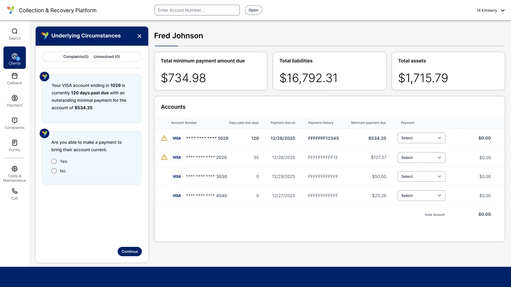
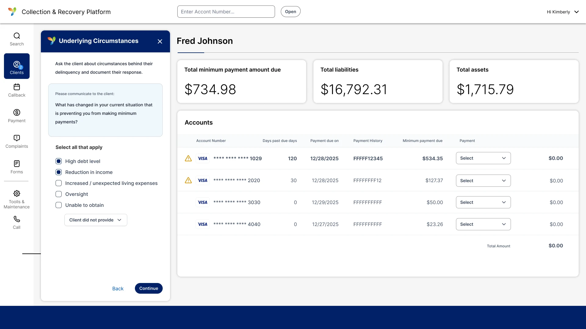
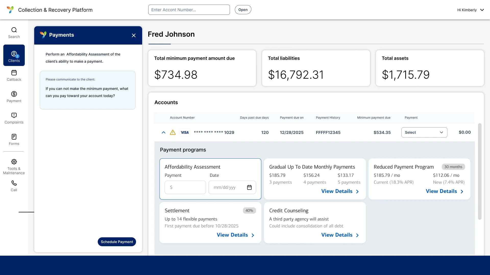

Fragmented Customer Context
Account details and relevant history were distributed across views, making it harder to understand the customer’s full situation during a call.
Helping agents make the right decision, not just find the right screen.
Agents were navigating disconnected collections tools while making complex decisions under time pressure. Through research and workflow analysis, I reframed the challenge from finding screens faster to guiding the next best action within a single servicing experience.

Collections agents moved between disconnected tools and relied on memorized eligibility rules while making hardship decisions live on calls.
Senior UX Designer, one of two designers. Conducted agent research (20+ call listening sessions, observation, screen recordings, stakeholder interviews) with Product, Engineering, Compliance and Operations.
Stop optimizing screens and move the decision logic into the system: guided questions, real-time eligibility checks, and only qualifying options shown to the agent.
An estimated 27% lower average handle time and 25% fewer escalations, with Product, Engineering, Compliance and Operations aligned on one decision framework.
Collections agents used a workstation to service delinquent accounts, understand customers’ circumstances, and identify appropriate payment or resolution options. Each interaction required agents to balance customer needs with account information, policies, and eligibility requirements.
The necessary capabilities existed, but relevant information and actions were spread across different screens, systems, and workflows. Agents had to piece together customer context, remember decision rules, and determine what to do next while keeping the conversation moving.
The opportunity was not simply to make navigation easier. It was to reduce the burden of decision-making on agents while allowing flexibility for conversations that rarely follow a predictable script.
Account details and relevant history were distributed across views, making it harder to understand the customer’s full situation during a call.
Agents had to interpret policies and determine suitable options themselves, increasing reliance on tenure, training, and individual judgment.
Finding the next step meant moving between tools and workflows rather than following a guided path informed by the conversation and customer circumstances.
“I’m searching for information while the customer waits. Sometimes I repeat questions and frustrate them, and I’m still figuring out which resolution is right.”Novice Collections Agent
Help agents identify an appropriate resolution path more quickly and consistently, without limiting their ability to respond to unpredictable customer needs.
Research spanned delinquency stages, account types, and agent experience levels, not to audit performance, but to map the cognitive pattern underneath it.
Agents had to know what information to collect and when; the system provided no structure to guide the sequence.
Experienced agents memorized business rules; less experienced agents struggled the moment a call went off-script.
Agents moved between systems and account views to assemble enough information to make a single decision.
Agents often had to determine which solution to recommend before the product confirmed it was actually eligible.
This pattern held across every tenure level I observed: new agents, agents with 2–5 years of experience, and veteran agents each hit it differently, but they all hit it.
The dip lands squarely on Hardship & Eligibility, the exact seam this project targeted. I built this map as evidence of where the bottleneck sat, not as a deliverable for its own sake.
Every step in the scenario above is backed by a rules pipeline agents never have to see. This is what actually runs behind step 3.
Stop optimizing individual workflows, and instead embed the decision logic directly into the experience. Rather than asking agents to hold the rules in their heads, the system should hold the rules: surfacing the right information, evaluating eligibility in real time, and guiding agents toward the next best action.
Keep the conversation flexible while providing clear direction.
Only surface questions, information, and actions when they become relevant.
Agents shouldn't have to memorize eligibility logic.
Bring relevant account and customer information into the servicing flow so agents don't need to hunt for context.
Use the information collected during the conversation to determine which questions, eligibility checks, solutions, and actions appear next.
The agent confirms the caller's identity claim, delivers the required call-recording disclosure, and selects who is on the line before any account data is surfaced.

Two independent verification methods are required before proceeding, reducing the risk of releasing account information to the wrong party.

The required debt-collection disclosure is presented as a guided step, with agent acknowledgment captured before the call can continue.

The prompt surfaces automatically once an account shows delinquency, starting with whether the customer can bring it current.
The same prompt follows the agent into the account-level view: full balance, delinquency, and offer history in place before a decision gets made.

Selectable, reportable categories replace free-text notes: high debt level, reduced income, unexpected expenses, oversight, or unable to obtain.

Expected duration, total net income, and monthly housing payment: the detail eligibility needs, without the agent having to know what to ask.

The programs shown reflect what this customer is actually eligible for; the agent selects one and schedules it without leaving the account.

Organizing the workstation around decisions rather than systems allowed agents to understand the customer's situation, determine an appropriate action, and resolve more cases without leaving the primary workflow.
Flexibility isn't the same as usability.
Complex business logic doesn't need to create a complex user experience. The system can absorb the complexity so people can focus on the decisions that require human judgment.